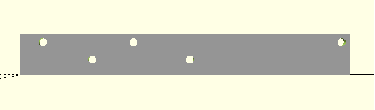
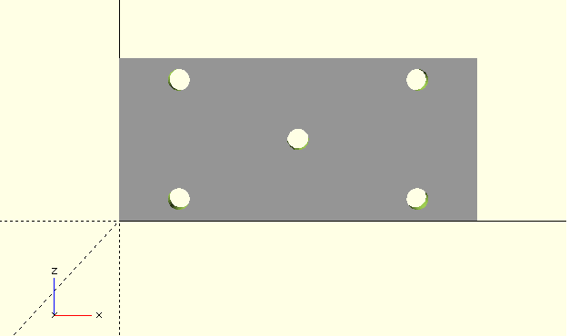
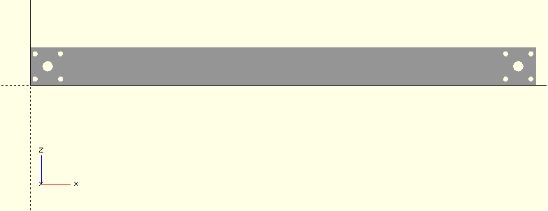
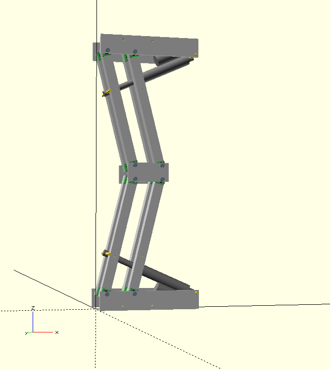

Last update on 19 April 2017.
Parts needed
| Name | Quantity | Where to use |
|---|---|---|
| Base side | 4 | bottom, top leg |
| Knee side | 2 | Knee |
| Bone | 8 | |
| Sigma profile 130x30x30 | 5 | Spacer for knee, top, bottom |
| Linear stepper motor 50mm stroke, 1500N | 2 | Expand, compress leg |
| Radial bearing 608rs | 32 | End of bones |
| Radial bearing 608rs housing | 32 | End of bones |
| M4x55 | 128 | End of bones |
| M4 autolock nut | 128 | End of bones |
| 4x9 washer | 256 | End of bones |
| M8x160 fully tapped | 8 | End of bones |
| M8 autolock nut | 8 | Nuts for M8x160 screws |
| M8 nut | 32 | Fixer for bones |
| 8x16 washer | 96 | Spacer for bones |
| M8x30 screw | 10 | Fixer for sigma spacers |
Base side
Size = 320, 40, 10
Material = aluminium
Quantity: 4
first bone hole position = 22, 32; radius = 4mm.
second bone hole position = 110, 32; radius = 4mm.
first spacer hole position = 70, 15; radius = 4mm.
second spacer hole position = 165, 15; radius = 4mm.
motor support hole position = 312, 32; radius = 4mm.
Knee side
Size = 132, 10, 60
Material = aluminium
Quantity: 2
knee side holes =
[22, 0, 8], "radius = 4"
[22, 0, 52], "radius = 4"
[110, 0, 8], "radius = 4"
[110, 0, 52], "radius = 4"
[66, 0, 30], "radius = 4"
Bone (aluminium)
Length = 400
30x30mm profile, wall thickness = 2mm
Quantity: 8
middle hole bearing = (14, 15), radius = 6.5 (minimum)
holes for screws holes bearing housing (4, 5), radius = 2mm
holes for screws holes bearing housing (4, 25), radius = 2mm
holes for screws holes bearing housing (24, 5), radius = 2mm
holes for screws holes bearing housing (24, 25), radius = 2mm
Do the same for the other side(s) - in total you must perform 4 sets of holes for each bone.
Final assembly
